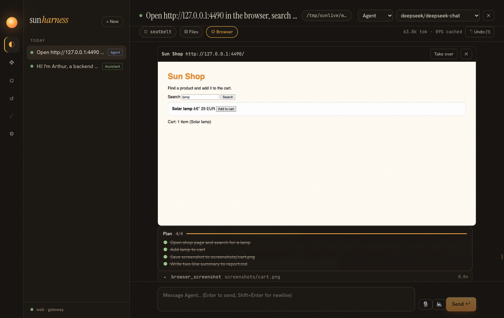
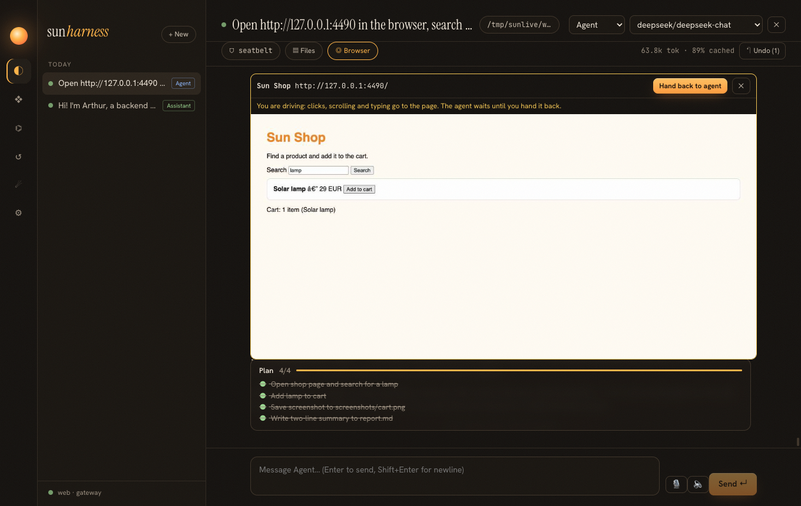

Optimization phase 3 · spec specs/022-browser.md · ADR 0008
20 · A browser you can watch and take
Manus-style agents feel magical because the browser is real and visible: logins work, JavaScript apps work, and a human can step in for a captcha. Underneath it is a stack of small, old tools: Chrome DevTools Protocol, a virtual X display, VNC, a WebSocket bridge, and socat.
The stack
Why is socat needed?
Chromium binds the DevTools port to loopback for security, and recent versions ignore --remote-debugging-address. Inside the container, loopback is unreachable from the host. socat listens on all container interfaces and forwards to 127.0.0.1:9222; the published port is bound to the host's 127.0.0.1 only.
The DevTools URL from /json/version did not work from the host.
Chrome reports its own view: ws://127.0.0.1:9222/devtools/browser/…. Behind socat and a port mapping the host must use the mapped port, so the client rewrites the host part of that URL to the one it actually reached.
Raw CDP instead of Playwright
About fifteen protocol methods cover everything: Target.createTarget and attachToTarget (flat sessions), Page.navigate, Network.* events for "network quiet", Accessibility.getFullAXTree, DOM.getBoxModel, Input.dispatchMouseEvent / KeyEvent / insertText, Page.startScreencast. Node 22 has a built-in WebSocket, so the client is ~150 lines with no dependency, works in the Electron main process, the CLI bundle and the gateway, and reuses the Chrome you already have.
What the model sees
URL: http://127.0.0.1:61234/
Title: Greeter
- page "Greeter"
- heading 1 "Greeter"
- Your name
- textbox "Your name" [ref=e1]
- button "Greet" [ref=e2]
- link "Second page" [ref=e3]The accessibility tree is the page as a screen reader sees it: roles, names, values, states. Interactive nodes get refs that map to backend DOM node ids; every action returns a fresh snapshot, and stale refs produce "take a new snapshot" instead of clicking the wrong thing. Clicks scroll the node into view and hit the center of its box model, like a human.
Live view and takeover
The live view stayed black in the test.
Two causes. Background tabs of a shared window do not paint, so each harness session now gets its own window (newWindow: true) and bringToFront on view. And Chrome only sends screencast frames when something repaints: a static page sends none. Starting the view now captures one screenshot immediately.
Frames are JPEG, throttled to four per second per session, broadcast as live events (desktop IPC, gateway SSE, remote clients) and never logged: they are not model-visible. Takeover events are logged, because the model is told about them.


Profiles
Each profile is a Chrome user-data directory under ~/.sun/browser/profiles, so cookies and logins persist. sun browser login https://… opens the profile in a visible window for a one-time sign-in. The shell sandbox hides ~/.sun, so a command the agent runs cannot read the cookies.
Verified
| Check | Result |
|---|---|
| local headless Chrome: navigate, type by ref, click, follow link, back, screenshot, bad ref | pass (test against a local HTTP server) |
| screencast frames, takeover blocks the agent until handed back, input forwarding | pass |
| docker image: Chromium 156 on Xvfb, CDP through socat, noVNC HTTP 200 | pass (manual end-to-end) |
A watchable, interruptible agent needs two channels: a structured one for the model (accessibility tree) and a visual one for the human (frames, VNC). Logging only what the model sees keeps the log small and honest.